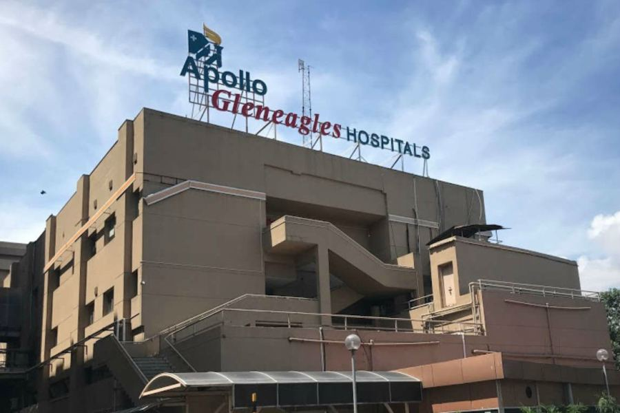
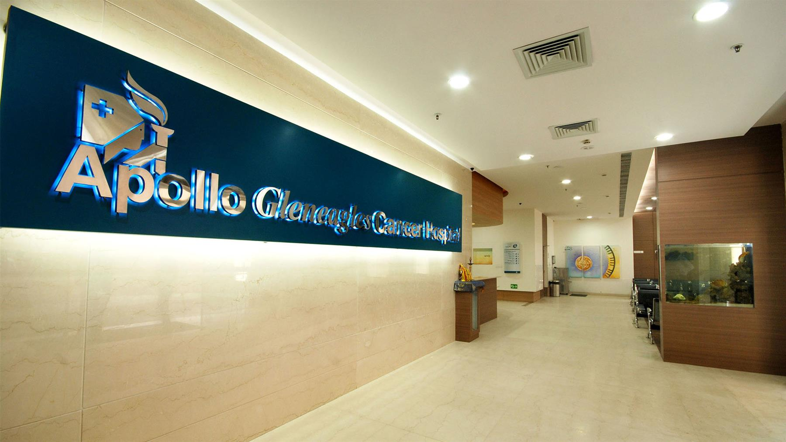
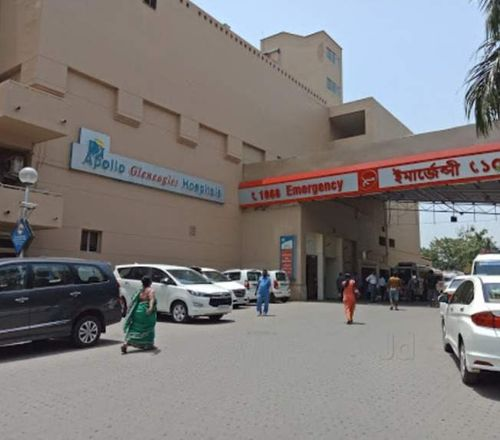
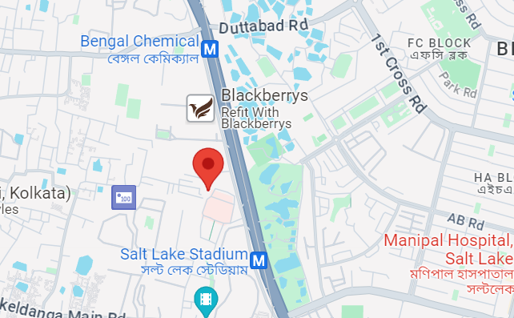
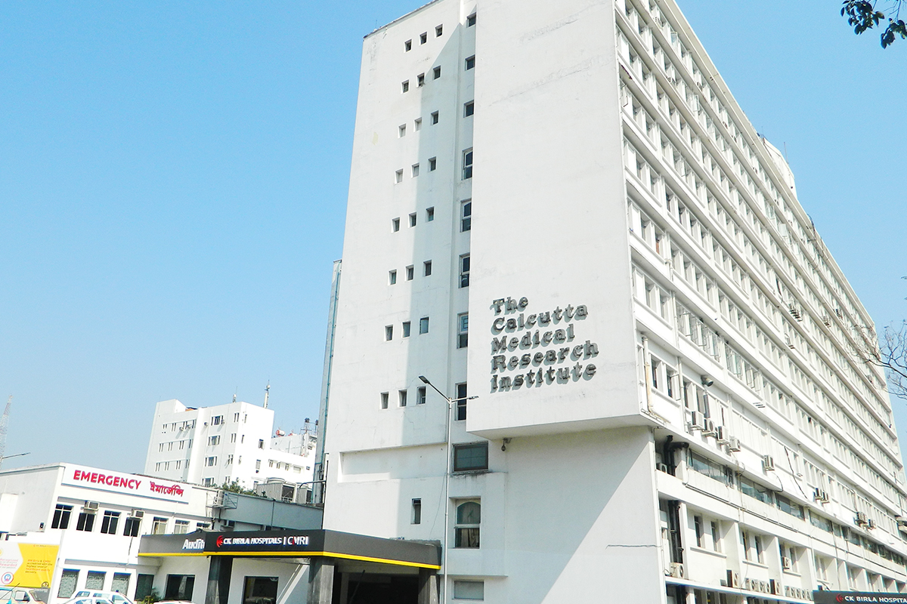
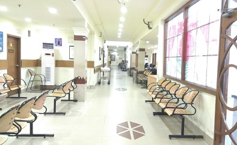
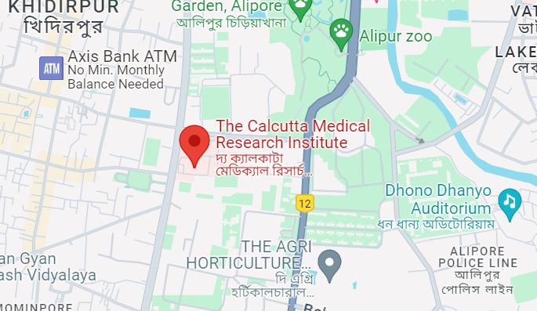
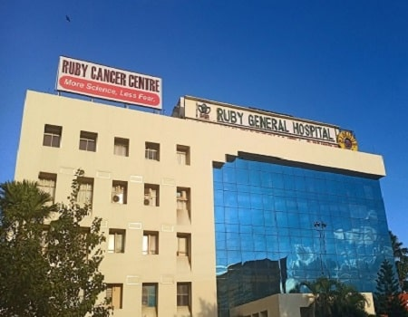
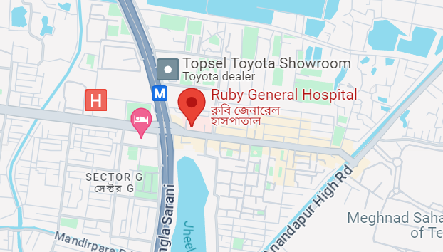

Apollo Gleneagles Hospitals, Kolkata



Apollo Gleneagles Hospitals in Kolkata is a joint venture between the Apollo Group of Hospitals, India, and Parkway Health of Singapore. It aims to deliver world-class healthcare solutions by creating an institution committed to the highest standards of medical services. Being a pioneer in integrated healthcare, the hospital offers a robust infrastructure featuring the latest medical advancements.
The hospital has an exceptional team of healthcare professionals specializing in a broad spectrum of disciplines. They are committed to providing compassionate, personalized care to every patient. Specialties include Cardiology, Orthopedics, Neurology, Oncology, Gastroenterology, Obstetrics and Gynecology, among others. With a focus on continuous learning and innovation, the team remains at the forefront of medical advancements.
The hospital is a 700-bedded multispecialty quaternary care hospital. It features state-of-the-art infrastructure with modern clinical and diagnostic equipment. The facility includes ICUs, operation theatres, and specialty-specific departments equipped with cutting-edge technology to ensure optimal patient care and safety.
 Maplinked
The Calcutta Medical Research Institute (CMRI)


The Calcutta Medical Research Institute (CMRI) is a multi-specialty hospital located in Kolkata, West Bengal. This hospital is recognized for its expertise in various medical disciplines and is known for providing comprehensive patient care since its inception. CMRI is dedicated to offering high-quality healthcare services, leveraging advanced technologies and a team of experienced medical professionals.
CMRI boasts a skilled team of doctors, nurses, and healthcare professionals dedicated to offering quality care to patients across various specialties. These include Cardiology, Neurology, Gastroenterology, Nephrology, Urology, Critical Care, Obstetrics & Gynaecology, Orthopaedics, and more. This diverse team enables CMRI to handle a wide range of medical conditions effectively.
CMRI is a 440-bedded hospital, boasting a modern infrastructure that combines cutting-edge technology with patient-friendly design. It features well-equipped operation theatres, ICUs, diagnostic labs, and specialty clinics. The hospital is designed to provide a healing environment that ensures comfort and care to patients and their families.
 Maplinked
Ruby General Hospital, Kolkata

Ruby General Hospital is a prominent multi-specialty medical institution in Kolkata. Established in 1995, it was the first Non-Resident Indian (NRI) hospital in Eastern India, known for delivering patient-centered care and excellent healthcare services, complemented by the relentless pursuit of quality and comfort for patients and their families.
Ruby General Hospital is proud of its highly experienced and diverse team of medical professionals committed to delivering comprehensive care. The team specializes in various medical disciplines such as Cardiology, Neurology, Orthopedics, Gastroenterology, Urology, Dermatology, and more, ensuring a holistic approach to patient treatment.
Ruby General Hospital, a 175-bedded facility, features modern infrastructure that incorporates state-of-the-art medical technology. The facility includes specialty clinics, advanced operation theatres, critical care units, and diagnostic laboratories, all aimed at delivering comprehensive and quality healthcare.
 Maplinked